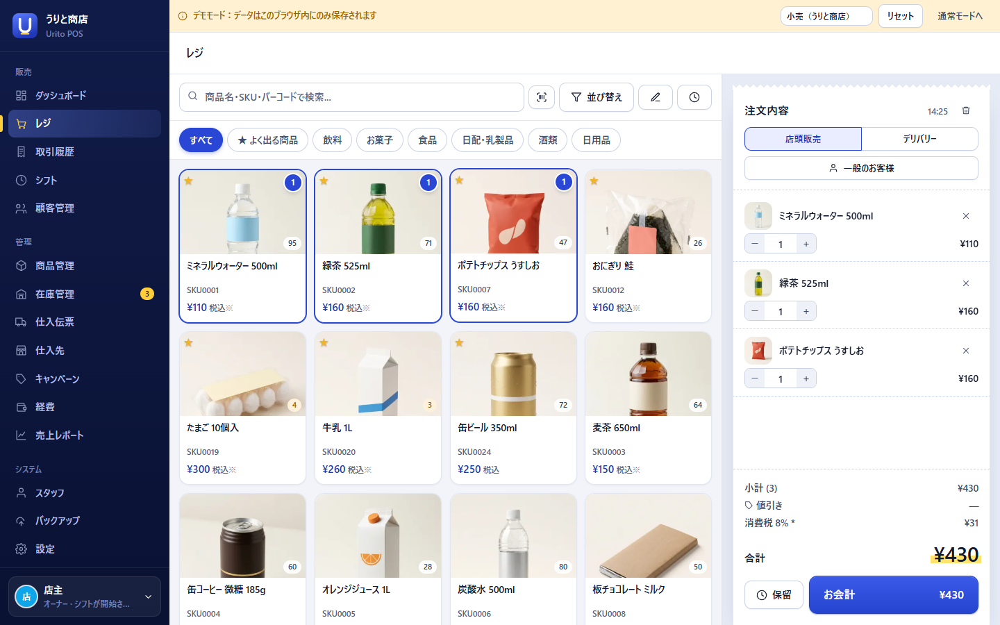
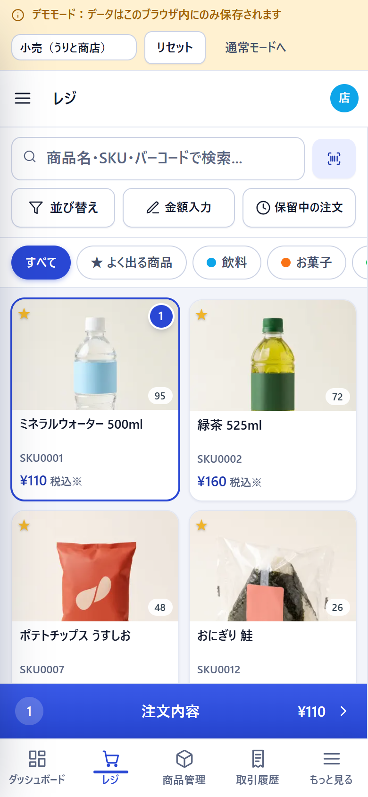
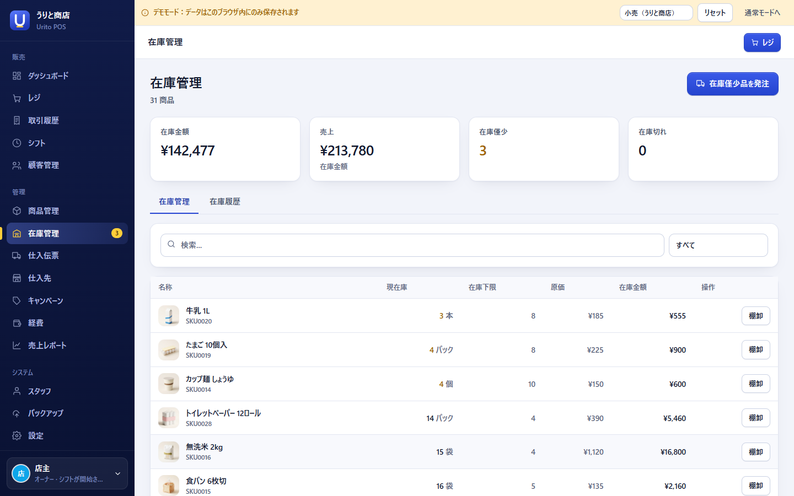
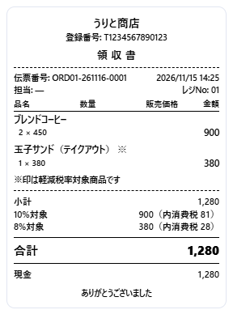

レジはシンプル。
帳簿ははっきり。
Urito は小規模ショップ・カフェ・飲食店のための完全オフライン動作 POS です。 売上・在庫・顧客・シフト・インボイス対応レシートをブラウザ内（IndexedDB）へ安全に保存し、月額費用ゼロで動きます。


3つの業種デモをそのまま体験
デモ環境は専用データベース（urito-demo）で隔離されているため、本番店舗データを汚さず何度でもリセットして試用できます。


現場の会計から日次集計・越境EC連携まで
ライト・ダーク両テーマ対応。レジ操作を止めずに在庫・仕入・売上分析を一画面体系で運用できます。



日本のインボイス制度・軽減税率・領収書に対応
小売・飲食店向けに適格簡易請求書要件と端数処理（切捨て・四捨五入・切上げ）を整数演算エンジンに統合しています。
- 商品ごとに標準 10%・軽減 8%・非課税を設定し、店内飲食時は自動で 10% へ切替可能
- 適格請求書発行事業者登録番号（
T＋13桁半角数字）と※印をサーマル幅 80mm / 58mm レシートへ印字 - 税率区分別の対象額・消費税額（
10%対象/8%対象）を自動計算して出力 - 宛名・但し書き対応の 領収書 モードを搭載し、50,000円以上で収入印紙枠を自動表示

10万件規模・低スペック端末を前提にした設計
全項目を Chrome CDP（CPU 4倍スロットリング・Emulation.setCPUThrottlingRate: 4）上で実測しています。
事前集計ロールアップ (v5/v7)
取引確定時に dailyStats / dailyProductStats を増分更新。起動・月次レポートが全件走査不要。
画像分離＆LRUキャッシュ (300件)
商品画像バイナリを productImages に分離し WebP 320px 圧縮。会計中の画像 DB 読取は 0 回を維持。
ストリーミング Gzip バックアップ
500件単位の主キー走査と CompressionStream('gzip') 直結＋images/ 差分フォルダ同期に対応。
オフライン暗号 PIN 認証
ランダム 16 バイトソルト付きの PBKDF2-SHA256 ハッシュ化と 5 回連続誤入力時のロックアウトタイマー。
厳格プリキャッシュ＆更新制御
インストール失敗を隠蔽せず、会計中の突然のリロードを防止。未会計カートがある場合は確認後に再読込。
予算強制バンドル設計
React.lazy 20 画面分割・日本語既定同梱・VI フォント動的読込により初期ロード予算（140 KB）内を維持。
| データ規模 | POS 初回起動 (4x CPU) | 6文字検索 | 10明細会計完了 | 会計中画像DB読取 | 年間レポート切替 | Gzip 出力・ヒープ |
|---|---|---|---|---|---|---|
| 200商品・1,000注文 | 211 ms | 88 ms | 820 ms | 0 回 | 280 ms | 151 ms (80 KB) · 19.7 MB |
| 2,000商品・20,000注文 | 225 ms | 80 ms | 1,109 ms | 0 回 | 299 ms | 1,216 ms (1.4 MB) · 37.4 MB |
| 5,000商品・100,000注文 | 340 ms | 127 ms | 944 ms | 0 回 | 288 ms | 6,060 ms (7.2 MB) · 34.1 MB |
開発ロードマップ（3フェーズ）
機能台帳（src/features/registry.ts）を単一ソースとしてアプリ内「開発状況」画面と同期しています。
運用可能（安定版・ベータ）
- レジ会計・保留・顧客売掛・シフト精算
- 軽減税率 8%/10%・インボイス・領収書
- Shopify 商品/受注 CSV・多言語カタログ
- ストリーミング Gzip・
images/同期
現在整備中（開発中）
- 配送先管理・配達ステータス管理
- レシート下部への決済用 QR コード印字
今後の予定（計画中）
- Shopline・Shopee CSV プリセット
- ローマ字入力による日本語商品高速検索
MIT ライセンス・データ完全ローカル保証
外部サーバー・トラッキング SDK・認証クラウドを一切含みません。すべての売上データ・顧客情報・商品画像は店主の端末内 IndexedDB とユーザー選択フォルダのみに保存されます。
StorageManager.persist() 要求に加えて Google Drive 等と同期するローカルフォルダへの自動バックアップを推奨しています。
npm install npm run dev # ローカル開発起動 npm test # Vitest 全テスト (112件) npm run build # PWA ビルド + SW 生成 npm run build:showcase # LP + /app 統合生成 npm run build:netlify # Netlify 手動デプロイ用 ZIP